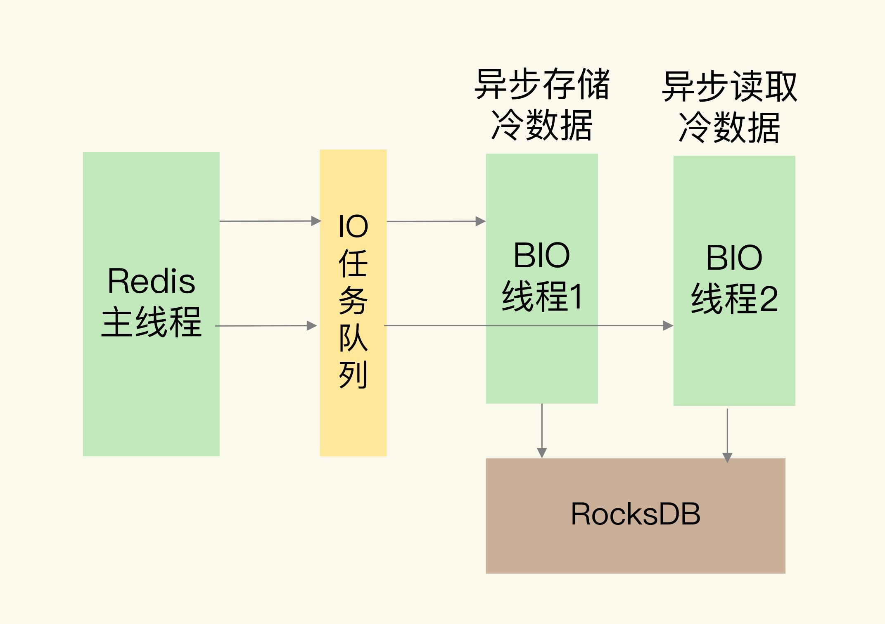
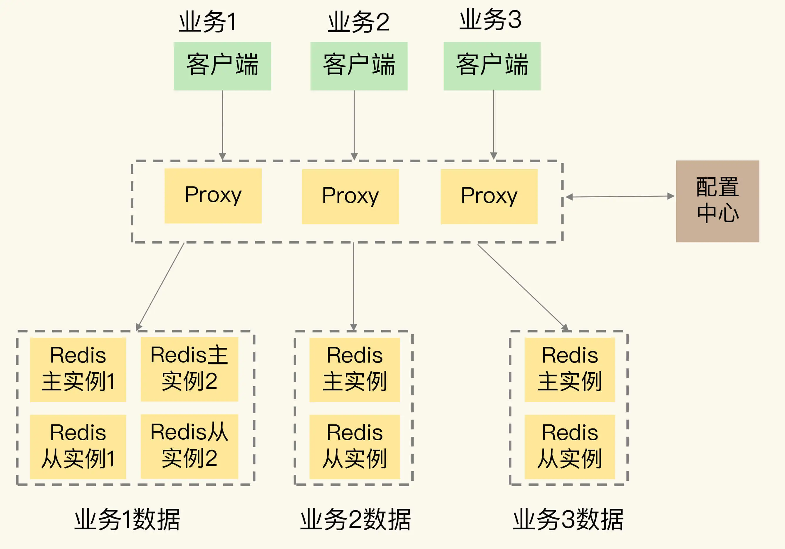

- 00 开篇词 这样学Redis，才能技高一筹.md.html
- 01 基本架构：一个键值数据库包含什么？.md.html
- 02 数据结构：快速的Redis有哪些慢操作？.md.html
- 03 高性能IO模型：为什么单线程Redis能那么快？.md.html
- 04 AOF日志：宕机了，Redis如何避免数据丢失？.md.html
- 05 内存快照：宕机后，Redis如何实现快速恢复？.md.html
- 06 数据同步：主从库如何实现数据一致？.md.html
- 07 哨兵机制：主库挂了，如何不间断服务？.md.html
- 08 哨兵集群：哨兵挂了，主从库还能切换吗？.md.html
- 09 切片集群：数据增多了，是该加内存还是加实例？.md.html
- 10 第1～9讲课后思考题答案及常见问题答疑.md.html
- 11 “万金油”的String，为什么不好用了？.md.html
- 12 有一亿个keys要统计，应该用哪种集合？.md.html
- 13 GEO是什么？还可以定义新的数据类型吗？.md.html
- 14 如何在Redis中保存时间序列数据？.md.html
- 15 消息队列的考验：Redis有哪些解决方案？.md.html
- 16 异步机制：如何避免单线程模型的阻塞？.md.html
- 17 为什么CPU结构也会影响Redis的性能？.md.html
- 18 波动的响应延迟：如何应对变慢的Redis？（上）.md.html
- 19 波动的响应延迟：如何应对变慢的Redis？（下）.md.html
- 20 删除数据后，为什么内存占用率还是很高？.md.html
- 21 缓冲区：一个可能引发“惨案”的地方.md.html
- 22 第11～21讲课后思考题答案及常见问题答疑.md.html
- 23 旁路缓存：Redis是如何工作的？.md.html
- 24 替换策略：缓存满了怎么办？.md.html
- 25 缓存异常（上）：如何解决缓存和数据库的数据不一致问题？.md.html
- 26 缓存异常（下）：如何解决缓存雪崩、击穿、穿透难题？.md.html
- 27 缓存被污染了，该怎么办？.md.html
- 28 Pika：如何基于SSD实现大容量Redis？.md.html
- 29 无锁的原子操作：Redis如何应对并发访问？.md.html
- 30 如何使用Redis实现分布式锁？.md.html
- 31 事务机制：Redis能实现ACID属性吗？.md.html
- 32 Redis主从同步与故障切换，有哪些坑？.md.html
- 33 脑裂：一次奇怪的数据丢失.md.html
- 34 第23~33讲课后思考题答案及常见问题答疑.md.html
- 35 Codis VS Redis Cluster：我该选择哪一个集群方案？.md.html
- 36 Redis支撑秒杀场景的关键技术和实践都有哪些？.md.html
- 37 数据分布优化：如何应对数据倾斜？.md.html
- 38 通信开销：限制Redis Cluster规模的关键因素.md.html
- 39 Redis 6.0的新特性：多线程、客户端缓存与安全.md.html
- 40 Redis的下一步：基于NVM内存的实践.md.html
- 41 第35～40讲课后思考题答案及常见问题答疑.md.html
- 加餐 01 经典的Redis学习资料有哪些？.md.html
- 加餐 02 用户Kaito：我是如何学习Redis的？.md.html
- 加餐 03 用户Kaito：我希望成为在压力中成长的人.md.html
- 加餐 04 Redis客户端如何与服务器端交换命令和数据？.md.html
- 加餐 05 Redis有哪些好用的运维工具？.md.html
- 加餐 06 Redis的使用规范小建议.md.html
- 加餐 07 从微博的Redis实践中，我们可以学到哪些经验？.md.html
- 结束语 从学习Redis到向Redis学习.md.html
- 捐赠
加餐 07 从微博的Redis实践中，我们可以学到哪些经验？
我们知道，微博内部的业务场景中广泛使用了 Redis，积累了大量的应用和优化经验。微博有位专家曾有过一个分享，介绍了 Redis 在微博的优化之路，其中有很多的优秀经验。
俗话说“他山之石，可以攻玉”，学习掌握这些经验，可以帮助我们在自己的业务场景中更好地应用 Redis。今天这节课，我就结合微博技术专家的分享，以及我和他们内部专家的交流，和你聊聊微博对 Redis 的优化以及我总结的经验。
首先，我们来看下微博业务场景对 Redis 的需求。这些业务需求也就是微博优化和改进 Redis 的出发点。
微博的业务有很多，例如让红包飞活动，粉丝数、用户数、阅读数统计，信息流聚合，音乐榜单等，同时，这些业务面临的用户体量非常大，业务使用 Redis 存取的数据量经常会达到 TB 级别。
作为直接面向终端用户的应用，微博用户的业务体验至关重要，这些都需要技术的支持。我们来总结下微博对 Redis 的技术需求：
- 能够提供高性能、高并发的读写访问，保证读写延迟低；
- 能够支持大容量存储；
- 可以灵活扩展，对于不同业务能进行快速扩容。
为了满足这些需求，微博对 Redis 做了大量的改进优化，概括来说，既有对 Redis 本身数据结构、工作机制的改进，也基于 Redis 自行研发了新功能组件，包括支持大容量存储的 RedRock 和实现服务化的 RedisService。
接下来，我们就来具体了解下微博对 Redis 自身做的一些改进。
微博对 Redis 的基本改进
根据微博技术专家的分享，我们可以发现，微博对 Redis 的基本改进可以分成两类：避免阻塞和节省内存。
首先，针对持久化需求，他们使用了全量 RDB 加增量 AOF 复制结合的机制，这就避免了数据可靠性或性能降低的问题。当然，Redis 在官方 4.0 版本之后，也增加了混合使用 RDB 和 AOF 的机制。
其次，在 AOF 日志写入刷盘时，用额外的 BIO 线程负责实际的刷盘工作，这可以避免 AOF 日志慢速刷盘阻塞主线程的问题。
再次，增加了 aofnumber 配置项。这个配置项可以用来设置 AOF 文件的数量，控制 AOF 写盘时的总文件量，避免了写入过多的 AOF 日志文件导致的磁盘写满问题。
最后，在主从库复制机制上，使用独立的复制线程进行主从库同步，避免对主线程的阻塞影响。
在节省内存方面，微博有一个典型的优化，就是定制化数据结构。
在使用 Redis 缓存用户的关注列表时，针对关注列表的存储，他们定制化设计了 LongSet 数据类型。这个数据类型是一个存储 Long 类型元素的集合，它的底层数据结构是一个 Hash 数组。在设计 LongSet 类型之前，微博是用 Hash 集合类型来保存用户关注列表，但是，Hash 集合类型在保存大量数据时，内存空间消耗较大。
而且，当缓存的关注列表被从 Redis 中淘汰时，缓存实例需要从后台数据库中读取用户关注列表，再用 HMSET 写入 Hash 集合，在并发请求压力大的场景下，这个过程会降低缓存性能。跟 Hash 集合相比，LongSet 类型底层使用 Hash 数组保存数据，既避免了 Hash 表较多的指针开销，节省内存空间，也可以实现快速存取。
从刚才介绍的改进工作，你可以看到，微博对 Redis 进行优化的出发点，和我们在前面课程中反复强调的 Redis 优化目标是一致的。我自己也总结了两个经验。
第一个经验是：高性能和省内存始终都是应用 Redis 要关注的重点，这和 Redis 在整个业务系统中的位置是密切相关的。
Redis 通常是作为缓存在数据库层前端部署，就需要能够快速地返回结果。另外，Redis 使用内存保存数据，一方面带来了访问速度快的优势，另一方面，也让我们在运维时需要特别关注内存优化。我在前面的课程里介绍了很多和性能优化、节省内存相关的内容（比如说第 18～20 讲），你可以重点回顾下，并且真正地在实践中应用起来。
第二个经验是，在实际应用中需要基于 Redis 做定制化工作或二次开发，来满足一些特殊场景的需求，就像微博定制化数据结构。不过，如果要进行定制化或二次开发，就需要了解和掌握 Redis 源码。所以，我建议你在掌握了 Redis 的基本原理和关键技术后，把阅读 Redis 源码作为下一个目标。这样一来，你既可以结合原理来加强对源码的理解，还可以在掌握源码后，开展新增功能或数据类型的开发工作。对于如何在 Redis 中新增数据类型，我在【第 13 讲】中向你介绍过，你可以再复习下。
除了这些改进工作，为了满足大容量存储需求，微博专家还在技术分享中提到，他们把 RocksDB 和硬盘结合使用，以扩大单实例的容量，我们来了解下。
微博如何应对大容量数据存储需求？
微博业务层要保存的数据经常会达到 TB 级别，这就需要扩大 Redis 实例的存储容量了。
针对这个需求，微博对数据区分冷热度，把热数据保留在 Redis 中，而把冷数据通过 RocksDB 写入底层的硬盘。
在微博的业务场景中，冷热数据是比较常见的。比如说，有些微博话题刚发生时，热度非常高，会有海量的用户访问这些话题，使用 Redis 服务用户请求就非常有必要。
但是，等到话题热度过了之后，访问人数就会急剧下降，这些数据就变为冷数据了。这个时候，冷数据就可以从 Redis 迁移到 RocksDB，保存在硬盘中。这样一来，Redis 实例的内存就可以节省下来保存热数据，同时，单个实例能保存的数据量就由整个硬盘的大小来决定了。
根据微博的技术分享，我画了一张他们使用 RocksDB 辅助 Redis 实现扩容的架构图：

从图中可以看到，Redis 是用异步线程在 RocksDB 中读写数据。
读写 RocksDB 的延迟毕竟比不上 Redis 的内存访问延迟，这样做也是为了避免读写冷数据时，阻塞 Redis 主线程。至于冷数据在 SSD 上的布局和管理，都交给 RocksDB 负责。RocksDB 目前已经比较成熟和稳定了，可以胜任 Redis 冷数据管理这个工作。
关于微博使用 RocksDB 和 SSD 进行扩容的优化工作，我也总结了两条经验，想和你分享一下。
首先，实现大容量的单实例在某些业务场景下还是有需求的。虽然我们可以使用切片集群的多实例分散保存数据，但是这种方式也会带来集群运维的开销，涉及到分布式系统的管理和维护。而且，切片集群的规模会受限，如果能增加单个实例的存储容量，那么，即使在使用较小规模的集群时，集群也能保存更多的数据。
第二个经验是，如果想实现大容量的 Redis 实例，借助于 SSD 和 RocksDB 来实现是一个不错的方案。我们在【第 28 讲】中学习的 360 开源的 Pika，还有微博的做法，都是非常好的参考。
RocksDB 可以实现快速写入数据，同时使用内存缓存部分数据，也可以提供万级别的数据读取性能。而且，当前 SSD 的性能提升很快，单块 SSD 的盘级 IOPS 可以达到几十万级别。这些技术结合起来，Redis 就能够在提供大容量数据存储的同时，保持一定的读写性能。当你有相同的需求时，也可以把基于 SSD 的 RocksDB 应用起来保存大容量数据。
面向多业务线，微博如何将 Redis 服务化？
微博的不同业务对 Redis 容量的需求不一样，而且可能会随着业务的变化出现扩容和缩容的需求。
为了能够灵活地支持这些业务需求，微博对 Redis 进行了服务化改造（RedisService）。所谓服务化，就是指，使用 Redis 集群来服务不同的业务场景需求，每一个业务拥有独立的资源，相互不干扰。
同时，所有的 Redis 实例形成一个资源池，资源池本身也能轻松地扩容。如果有新业务上线或是旧业务下线，就可以从资源池中申请资源，或者是把不用的资源归还到资源池中。
形成了 Redis 服务之后，不同业务线在使用 Redis 时就非常方便了。不用业务部门再去独立部署和运维，只要让业务应用客户端访问 Redis 服务集群就可以。即使业务应用的数据量增加了，也不用担心实例容量问题，服务集群本身可以自动在线扩容，来支撑业务的发展。
在 Redis 服务化的过程中，微博采用了类似 Codis 的方案，通过集群代理层来连接客户端和服务器端。从微博的公开技术资料中，可以看到，他们在代理层中实现了丰富的服务化功能支持。
- 客户端连接监听和端口自动增删。
- Redis 协议解析：确定需要路由的请求，如果是非法和不支持的请求，直接返回错误。
- 请求路由：根据数据和后端实例间的映射规则，将请求路由到对应的后端实例进行处理，并将结果返回给客户端。
- 指标采集监控：采集集群运行的状态，并发送到专门的可视化组件，由这些组件进行监控处理。
此外，在服务化集群中，还有一个配置中心，它用来管理整个集群的元数据。同时，实例会按照主从模式运行，保证数据的可靠性。不同业务的数据部署到不同的实例上，相互之间保持隔离。
按照我的理解，画了一张示意图，显示了微博 Redis 服务化集群的架构，你可以看下。

从 Redis 服务化的实践中，我们可以知道，当多个业务线有共同的 Redis 使用需求时，提供平台级服务是一种通用做法，也就是服务化。
当把一个通用功能做成平台服务时，我们需要重点考虑的问题，包括平台平滑扩容、多租户支持和业务数据隔离、灵活的路由规则、丰富的监控功能等。
如果要进行平台扩容，我们可以借助 Codis 或是 Redis Cluster 的方法来实现。多租户支持和业务隔离的需求是一致，我们需要通过资源隔离来实现这两个需求，也就是把不同租户或不同业务的数据分开部署，避免混用资源。对于路由规则和监控功能来说，微博目前的方案是不错的，也就是在代理层 proxy 中来完成这两个功能。
只有很好地实现了这些功能，一个平台服务才能高效地支撑不同业务线的需求。
小结
今天这节课，我们学习了微博的 Redis 实践，从中总结了许多经验。总结来说，微博对 Redis 的技术需求可以概括为 3 点，分别是高性能、大容量和易扩展。
为了满足这些需求，除了对 Redis 进行优化，微博也在自研扩展系统，包括基于 RocksDB 的容量扩展机制，以及服务化的 RedisService 集群。
最后，我还想再跟你分享一下我自己的两个感受。
第一个是关于微博做的 RedisService 集群，这个优化方向是大厂平台部门同学的主要工作方向。
业务纵切、平台横切是当前构建大规模系统的基本思路。所谓业务纵切，是指把不同的业务数据单独部署，这样可以避免相互之间的干扰。而平台横切是指，当不同业务线对运行平台具有相同需求时，可以统一起来，通过构建平台级集群服务来进行支撑。Redis 就是典型的多个业务线都需要的基础性服务，所以将其以集群方式服务化，有助于提升业务的整体效率。
第二个是代码实践在我们成长为 Redis 高手过程中的重要作用。
我发现，对 Redis 的二次改造或开发，是大厂的一个必经之路，这和大厂业务多、需求广有密切关系。
微博做的定制化数据结构、RedRock 和 RedisService 都是非常典型的例子。所以，如果我们想要成为 Redis 高手，成为大厂中的一员，那么，先原理后代码，边学习边实践，就是一个不错的方法。原理用来指导代码阅读的聚焦点，而动手实践至关重要，需要我们同时开展部署操作实践和阅读代码实践。纸上得来终觉浅，绝知此事要躬行，希望你不仅重视学习原理，还要真正地用原理来指导实践，提升自己的实战能力。
每课一问
按照惯例，我给你提个小问题，你在实际应用 Redis 时，有没有一些经典的优化改进或二次开发经验？
欢迎你在留言区聊一聊你的经验，我们一起交流讨论。如果你觉得今天的内容对你有所帮助，也欢迎你把今天的内容分享给你的朋友或同事。
© 2019 - 2023 Liangliang Lee. Powered by gin and hexo-theme-book.